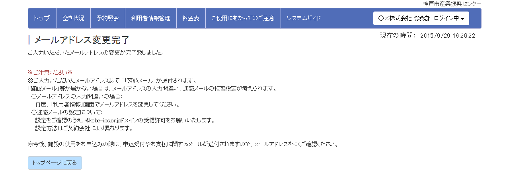

神戸市産業振興センター
|1．ご利用いただくにあたって
|本システムでできること
(1) 神戸市産業振興センターの施設 空き状況の確認
(2) 同施設の使用申込 ※
(3) 本システムでお申込みいただいた一覧の参照 ※
システムご利用にあたっては、利用規約を必ずご覧いただきますようお願いいたします。
また、※をご使用になるには、ご利用登録が必要になります。こちらの手順にそってご登録ください。
|推奨環境
Internet Explorer 9.0以上、Firefox 3.7以上
※携帯電話、スマートフォンには非対応です。
※Cookieおよびjavascriptを利用する為、設定を有効にする必要があります。
また、Internet Explorerのセキュリティレベルは「高」ではご利用になれません。セキュリティレベルを「中」以下に設定してください。
|2．空き状況の閲覧
ご利用登録やログインをせずに、空き状況を確認する手順を説明します。
(1)トップメニューの「空き状況」ボタンを押します。
(2)施設の空き状況ページが表示されます。
※このページからは使用申込は行えません。使用申込を行う場合は「ご利用登録・使用申込はこちら」ボタンを押してください。
| ①検索条件設定 |
絞り込みたい場合、条件を変更して「検索する」ボタンを押します。
- 施設分類…施設の形式で絞り込む場合に指定します。
- 年月…使用予定月が決まっている場合に指定します。
- 曜日…特定の曜日に限定して絞り込みたい場合、条件を変更します。
(✔をつけた曜日が検索対象となります）
- 使用日…使用予定の日付が決まっている場合に指定します。
|
| ②「前へ」「次へ」ボタン |
ボタンを押すと、現在表示している期間の前後に移動することができます。
- 「前へ」ボタン…現在の表示から、2週間遡った期間に移動します。
- 「次へ」ボタン…現在の表示から、2週間進んだ期間に移動します。
※前後に移動した際も①の条件で絞り込まれます。
|
| ③「ご利用登録・使用申込はこちら」ボタン |
本システムから使用申込を行いたい場合に押します。（押すとトップページに戻ります）
- インターネットでの使用申込がはじめての場合は、ご利用登録が必要となります。
こちら の手順にそってご登録ください。
- すでにご利用登録がお済みの場合は、こちら の手順にそってお申込みください。
|
△ページの最初に戻る
|3．ご利用登録の手順
インターネットでの使用申込がはじめての場合、
ご利用登録が必要となります。
(1)トップメニューの「新規利用者登録」ボタンを押します。
(2)本システムの利用規約が表示されます。
内容をご確認いただき「同意する」を選択した後、「次へ進む」ボタンを押します。
(3)入力ページが表示されますので、利用者名等、必要事項をご入力のうえ「確認画面へ」ボタンを押します。
ここでご登録いただくメールアドレスあてに、申込受付やお支払のお知らせをお送りいたしますので、よくご確認のうえご入力ください。
迷惑メールの拒否設定をされている場合は、@kobe-ipc.or.jpドメインの受信許可をお願いいします。
(4)入力確認ページが表示されますので、誤りがないか確認して「送信する」ボタンを押します。
(5)ご利用登録が完了いたしました。
ご利用登録いただいたメールアドレスあてに、「利用者登録完了のお知らせ」メールを送信しています。届いているかどうかご確認ください。
ページ下部にある「ご利用開始はこちらから」の各ボタンから、使用申込および利用者情報変更の手続きに進むことができます。
- 使用申込は、こちら の手順にそってお申込みください。
- パスワードは、ご自身の覚えやすいものに変更可能です。こちら の手順にそってお手続きください。
△ページの最初に戻る
|4．使用申込の手順
ご利用登録がお済みの方が、使用申込する手順について説明します。
(1)トップメニューの「空き状況・使用申込」ボタンを押します。
(2)本システムの利用規約が表示されます。（※ログイン済みの場合は、表示されません）
内容をご確認いただき「同意する」を選択した後、「次へ進む」ボタンを押します。
(3)ログインページが表示されます。（※ログイン済みの場合は、表示されません）
ログインIDとパスワードを入力して、「ログイン」ボタンを押します。
ログインID、パスワードを忘れた方は、こちら の手順をご確認下さい。
(4)ご使用にあたってのご注意が表示されますので、内容を確認し「次へ進む」ボタンを押します。
(5)施設の空き状況が表示されます。
施設使用料については、ページ上部の「料金表」メニューでご確認をお願いします。（当センターのホームページが別窓で開きます）
| ①検索条件設定 |
絞り込みたい場合、条件を変更して「検索する」ボタンを押します。
- 施設分類…施設の形式で絞り込む場合に指定します。
- 年月…使用予定月が決まっている場合に指定します。
- 曜日…特定の曜日に限定して絞り込みたい場合、条件を変更します。
(✔をつけた曜日が検索対象となります）
- 使用日…使用予定の日付が決まっている場合に指定します。
|
| ②「前へ」「次へ」ボタン |
ボタンを押すと、現在表示している期間の前後に移動することができます。
- 「前へ」ボタン…現在の表示から、2週間遡った期間に移動します。
- 「次へ」ボタン…現在の表示から、2週間進んだ期間に移動します。
※前後に移動した際も①の条件で絞り込まれます。
|
| ③「施設情報を見る」ボタン |
ボタンを押すと、各施設の付属設備等の情報を確認できます。（当センターのホームページが別窓で開きます） |
| ④「空」マーク |
希望する施設・日時の「空」マークを押すと、お申込み対象とすることができます。
※お申込みできる単位については、「利用規約」および「ご使用にあたってのご注意」をご確認ください。
※この画面ではご予約は確保されません。
|
※検索例※ 2016/1/1～2016/2/29の間で、会議室を使用したい（月曜か火曜希望）場合は、以下のように設定して「検索する」ボタンを押します。
(6)希望する施設、日時の「空」マークを押します。
下の図のように選択中（○マーク）に変わります。「使用申込へ進む」ボタンを押します。
※○マークをもう一度押すと、選択を解除することができます。
※選択しているもの全てを解除したい場合は、「選択解除」ボタンを押してください。
(7)お申込み内容を入力するページが表示されます。
お申込み施設には、前ページで選択した結果が表示されています。お申込みを取り止める行がある場合は、「削除」ボタンを押してください。
必要事項を入力後、「確認画面へ」ボタンを押します。
※ハーバーホールをご使用の場合は、「準備・リハ」「本番」「撤去」の時間もご入力ください。
リハーサルのみでご使用になる場合は「準備・リハ」のみご入力ください。
(8)入力確認ページが表示されますので、誤りがないか確認して「送信する」ボタンを押します。
(9)ご希望の内容はシステムに送信されました。
お申込みが成立したかどうかは、あらためてメールでお知らせします。
△ページの最初に戻る
|5．お申込み内容の確認
本システムからお申込みされた内容を確認する手順を説明します。
(1)トップメニューの「予約照会」ボタンを押します。
(2)本システムの利用規約が表示されます。（※ログイン済みの場合は、表示されません）
内容をご確認いただき「同意する」を選択した後、「次へ進む」ボタンを押します。
(3)ログインページが表示されます。（※ログイン済みの場合は、表示されません）
ログインIDとパスワードを入力して、「ログイン」ボタンを押します。
ログインID、パスワードを忘れた方は、こちら の手順をご確認下さい。
(4)予約照会ページには、本システムからお申込みされた予約の一覧が表示されます。
※表示されるのは、使用予定日が当日以降のものに限ります。

本システムから使用許可のお取消はできません。受付までお問い合わせください。
△ページの最初に戻る
|6．メールアドレス・パスワードの変更手順
|メールアドレスを変更する場合
(1)トップページにある「利用者情報変更」ボタンを押します。
(2)本システムの利用規約が表示されます。（※ログイン済みの場合は、表示されません）
内容をご確認いただき「同意する」を選択した後、「次へ進む」ボタンを押します。
(3)ログインページが表示されます。（※ログイン済みの場合は、表示されません）
ログインIDとパスワードを入力して、「ログイン」ボタンを押します。
ログインID、パスワードを忘れた方は、こちら の手順をご確認下さい。
(4)利用者情報の変更についてのページが表示されます。
変更したいのはメールアドレスのため、一行目の「こちら」を押します。
(5)メールアドレス変更のページが表示されます。
ページを開いた際は、現在登録されているメールアドレスが表示されていますので、アドレスを変更し「このアドレスで登録する」ボタンを押します。
(6)メールアドレスの変更が完了しました。
確認メールを送付しておりますので、届いているかどうかご確認ください。

|パスワードを変更する場合
(1)トップページにある「利用者情報変更」ボタンを押します。
(2)本システムの利用規約が表示されます。（※ログイン済みの場合は、表示されません）
内容をご確認いただき「同意する」を選択した後、「次へ進む」ボタンを押します。
(3)ログインページが表示されます。（※ログイン済みの場合は、表示されません）
ログインIDとパスワードを入力して、「ログイン」ボタンを押します。
ログインID、パスワードを忘れた方は、こちら の手順をご確認下さい。
(4)利用者情報の変更についてのページが表示されます。
変更したいのはパスワードのため、二行目の「こちら」を押します。

(5)パスワード変更ページが表示されますので、現在のパスワードおよび新しいパスワードを入力後、「変更する」ボタンを押します。
(6)パスワードの変更が完了しました。次回ログイン時から新しいパスワードをご使用ください。
△ページの最初に戻る
|7.ログインでお困りの方はこちら
△ページの最初に戻る